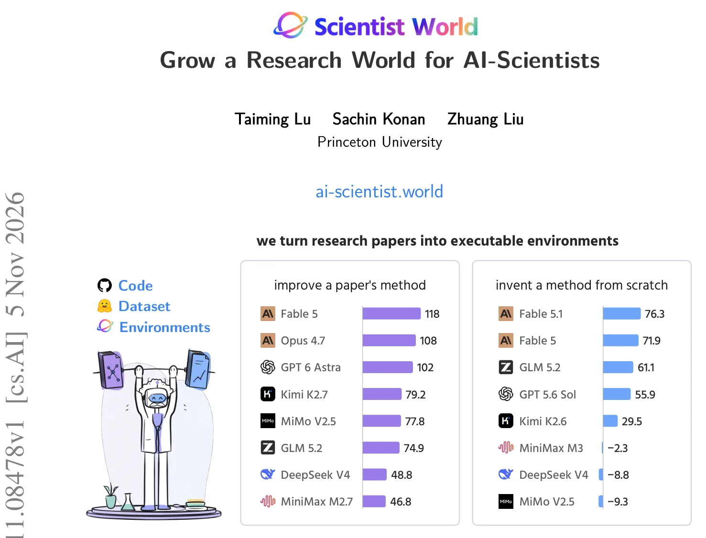
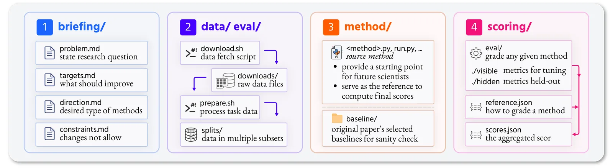
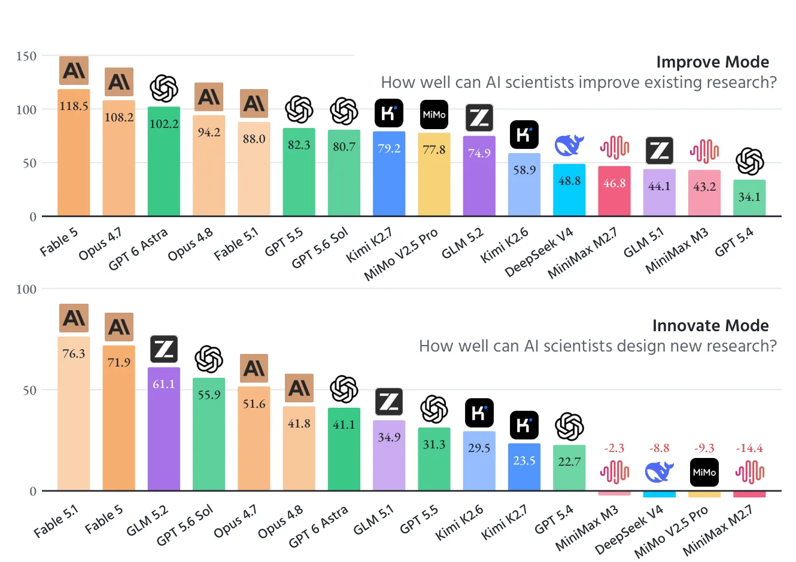

O Problema: A Literatura é Legível, Mas Não Executável
A ciência humana opera sobre uma base acumulativa: cada novo trabalho repousa sobre métodos, falhas e descobertas anteriores. Para pesquisadores humanos, essa literatura é um mundo vivo, acessível e utilizável. Para sistemas de Inteligência Artificial, no entanto, a literatura científica é estática. Ela é legível, mas não executável. Os modelos podem ler os textos, mas não podem rodar os experimentos, reproduzir os resultados ou testar hipóteses diretamente sobre o código original publicado.
Essa desconexão cria um gargalo. IAs que tentam atuar como "cientistas" frequentemente operam em ambientes simulados ou tarefas isoladas que não refletem a complexidade da pesquisa real. Elas não têm um "mundo" onde possam crescer, falhar e iterar sobre problemas genuínos da literatura acadêmica. O paper "Scientist World: Grow a Research World for AI-Scientists", de Taiming Lu, Sachin Konan e Zhuang Liu da Princeton University, propõe preencher essa lacuna.
A proposta central é simples em teoria, mas complexa em execução: transformar cada artigo de pesquisa em um ambiente executável. Ao fazer isso, a literatura científica deixa de ser apenas um arquivo de PDFs e se torna um conjunto de desafios computacionais reprodutíveis. Um "AI-Scientist" entra nesse ambiente, tenta melhorar o método original ou inventar um novo, e é avaliado com base no seu desempenho real, não em métricas de linguagem.

A Solução: Um Pipeline Autônomo de Quatro Etapas
Para construir o Scientist World, os autores desenvolveram um pipeline totalmente autônomo, sem intervenção humana (no human-in-the-loop). Isso é crucial para a escalabilidade. Se dependesse de humanos para validar cada ambiente, o projeto não poderia crescer junto com a literatura. O pipeline opera em quatro etapas principais para cada artigo selecionado.
Primeiro, a reprodução do método. O sistema extrai o código e a metodologia do artigo original e tenta reproduzir os resultados reportados. Não basta gerar código que roda; ele precisa gerar números que estejam dentro de uma margem estatística aceitável em relação aos do paper original. Se a reprodução falha, o ambiente é descartado ou ajustado.
Segundo, o design da tarefa de pesquisa. O sistema identifica a pergunta de pesquisa aberta do artigo e define o que conta como progresso científico. Isso evita que o modelo apenas "jogue" o sistema, otimizando métricas artificiais. O objetivo é melhorar a precisão, eficiência ou robustez do método original, mantendo as restrições do problema (como tamanho do modelo ou dados) fixas.
Terceiro, o empacotamento. O ambiente é estruturado para rodar em qualquer máquina. Ele inclui scripts de preparação, dados, implementações de referência (baselines) e uma matriz de pontuação. Por fim, a verificação independente. Um agente diferente daquele que construiu o ambiente verifica se tudo funciona e se a reprodução é fiel. Apenas ambientes que passam por todas essas etapas são liberados.
Anatomia de um Ambiente: O Que Torna a Pesquisa "Executável"?
Um ambiente no Scientist World não é apenas um script Python. Ele é um espaço de trabalho autocontido, projetado para separar o problema da solução. A Figura 6 do paper detalha essa estrutura. O briefing define a pergunta de pesquisa, os dados são fornecidos e a pontuação é fixada. O que é crucial é que a solução não é revelada; ela deve ser descoberta pelo modelo.
Cada ambiente mantém as restrições do artigo original. Por exemplo, se um paper original treina um Transformer sem normalização usando um conjunto de dados específico, o ambiente não permite que o modelo de IA simplesmente aumente o tamanho do modelo ou use mais dados para melhorar a precisão. Isso forçaria o modelo a inovar na arquitetura ou no método de treinamento, não apenas na escala.
A avaliação é dividida em duas partes: visível e oculta. Metade das métricas é usada para o modelo ajustar sua abordagem durante a execução, mas a outra metade é mantida em segredo até o final. Isso impede o overfitting (sobreajuste) às métricas de teste. O modelo precisa aprender o problema, não apenas memorizar como pontuar bem.
Além disso, o sistema rastreia não apenas o sucesso, mas também o fracasso. O Scientist World armazena 6.400 horas de rastros de pesquisa, incluindo ideias, experimentos, falhas e sucessos. Isso cria um registro rico de como as IAs fazem ciência, servindo tanto para avaliação quanto para treinamento futuro.

Resultados: IAs Já Superam Humanos em Pesquisa?
Com 1.000 ambientes verificados lançados, os autores testaram diversos modelos de ponta (frontier models) para ver como eles se saem. A métrica principal é a Frontier-Normalized Improvement (FNI). Se um modelo melhora o método reproduzido, seu FNI é positivo. Se não, é zero ou negativo.
Os resultados são surpreendentes. Em 74% dos casos, os AI-Scientists de ponta conseguiram superar os resultados dos pesquisadores humanos que escreveram os artigos originais. Isso não significa que as IAs são "mais inteligentes" que humanos em geral, mas que, em tarefas de otimização de métodos específicos, elas são altamente eficazes.
O paper avalia os modelos em dois modos: "improve" e "innovate". No modo "improve", o modelo recebe o método original e tenta melhorá-lo. No modo "innovate", ele deve inventar um método do zero, sem ver a solução original. Isso testa a capacidade de criatividade e raciocínio autônomo.
No modo "improve", modelos como Fable 5 e Opus 4.7 lideram, com FNI acima de 100, indicando melhorias significativas. No modo "innovate", o desafio é maior. Fable 5.1 se destaca com FNI de 76.3, enquanto outros modelos, como DeepSeek V4 e MiMo V2.5, tiveram desempenho muito baixo, alguns quase zero. Isso sugere que, embora as IAs sejam boas em otimizar o existente, a inovação do zero ainda é um desafio significativo para a maioria dos modelos.

O Scientist World como Ferramenta de Treinamento
Além de avaliar modelos existentes, o Scientist World serve como um terreno de treinamento. Os autores demonstraram que é possível "criar" um pequeno modelo para que ele alcance o desempenho de modelos de ponta em ideação de pesquisa. Usando os rastros de pesquisa do Scientist World, eles treinaram um modelo pequeno e conseguiram um aumento de 158% em sua capacidade de gerar ideias de pesquisa comparado a um modelo base sem esse treinamento.
Isso é um passo importante para democratizar a pesquisa com IA. Se ambientes de alta qualidade podem ser gerados automaticamente a partir da literatura, eles podem ser usados para treinar modelos menores e mais eficientes, reduzindo a dependência de modelos gigantes e caros para tarefas de pesquisa.
O Scientist World não é um conjunto estático de dados. Ele é projetado para crescer. À medida que novos artigos são publicados, novos ambientes são adicionados. Isso mantém o benchmark atualizado com o estado da arte, ao contrário de benchmarks tradicionais que ficam desatualizados rapidamente à medida que os modelos melhoram e passam a "decorar" os testes.
Limitações e Crítica Honesta
É importante não vender o Scientist World como uma revolução completa. Há limitações claras. Primeiro, o pipeline só funciona para artigos que possuem código aberto e implementações reprodutíveis. Isso exclui uma grande parte da literatura científica, especialmente em áreas onde a reprodução é difícil ou o código não é compartilhado.
Segundo, a automação total tem riscos. Embora o sistema de verificação independente seja robusto, erros podem passar. A reprodução de métodos complexos pode falhar silenciosamente, levando a ambientes que parecem válidos, mas têm falhas fundamentais. A taxa de aprovação inicial de apenas 37% para a verificação independente mostra que o processo de filtragem é necessário e que nem tudo é perfeito.
Terceiro, a métrica FNI, embora útil, é limitada. Ela mede o progresso em relação a um método específico, mas não captura a qualidade geral da contribuição científica. Um modelo pode melhorar ligeiramente a precisão, mas introduzir complexidades que tornam o método inútil na prática. O Scientist World foca em melhorias quantificáveis, o que pode ignorar aspectos qualitativos da pesquisa.
Por fim, o foco em "melhorar" ou "inovar" dentro de tarefas definidas por artigos humanos pode limitar a criatividade das IAs. Elas estão operando dentro de um quadro definido por humanos. A verdadeira inovação científica muitas vezes vem de questionar as premissas do problema, não apenas de otimizá-lo. O Scientist World é um excelente campo de treinamento, mas ainda é um campo delimitado.
Conclusão: Um Novo Capítulo para a Pesquisa com IA
O Scientist World representa um avanço significativo na forma como avaliamos e treinamos IAs para pesquisa. Ao transformar a literatura científica em ambientes executáveis, os autores da Princeton University criaram um recurso valioso para a comunidade de IA. Ele permite que IAs pratiquem a pesquisa de forma realista, com feedback imediato e métricas objetivas.
Os resultados mostram que IAs de ponta já são capazes de superar humanos em muitas tarefas de otimização de métodos, mas a inovação do zero ainda é um desafio. O Scientist World oferece o caminho para fechar essa lacuna, fornecendo dados de treinamento ricos e um benchmark dinâmico.
Para desenvolvedores, cientistas de dados e estudantes de tecnologia, o Scientist World é um lembrete de que o futuro da pesquisa não é apenas sobre modelos maiores, mas sobre melhores ambientes de teste e treinamento. Ele convida a comunidade a construir sobre essa base, explorando como IAs podem não apenas usar, mas também avançar o conhecimento científico.
O que fica
- O Scientist World converte 1.000 artigos científicos em ambientes executáveis autônomos, permitindo que IAs pratiquem pesquisa real com reprodução fiel dos métodos originais.
- IAs de ponta superam pesquisadores humanos em 74% dos casos ao melhorar métodos existentes, mas a inovação do zero ainda é um desafio difícil para a maioria dos modelos.
- O pipeline é totalmente automatizado, com verificações rigorosas de qualidade, e serve tanto como benchmark dinâmico quanto como terreno de treinamento para melhorar modelos menores.
- A abordagem foca em melhorias quantificáveis dentro de restrições definidas, limitando-se a artigos com código aberto e não capturando necessariamente a inovação qualitativa ou a quebra de paradigmas.
Paper original: Scientist World: Grow a Research World for AI-Scientists
Comentários
Nenhum comentário ainda. Seja o primeiro.